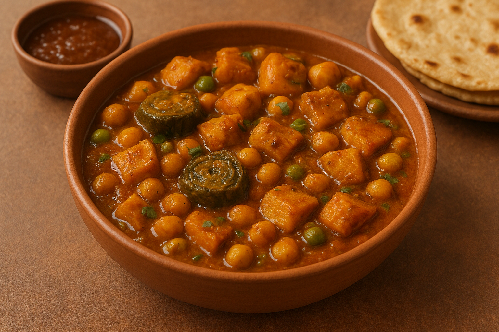
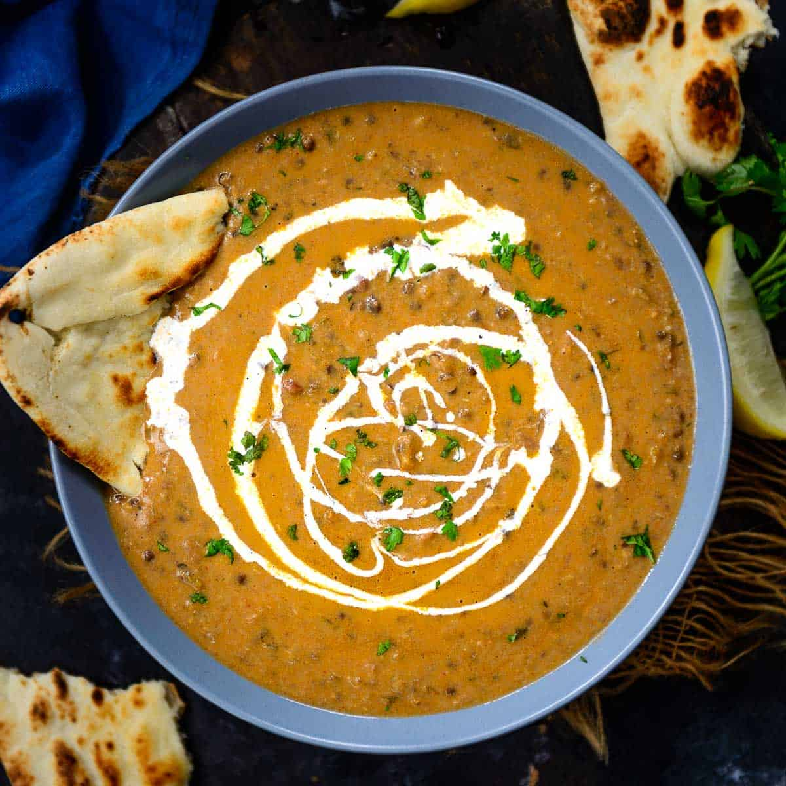
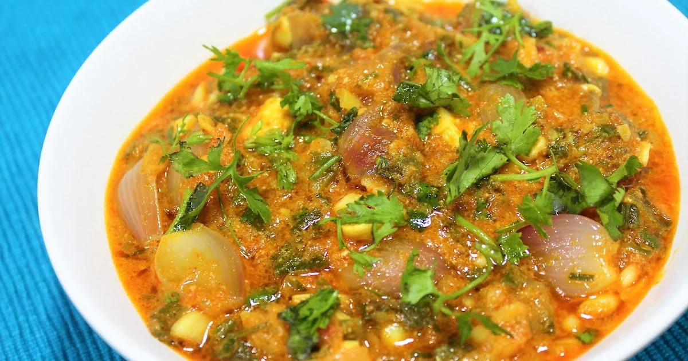
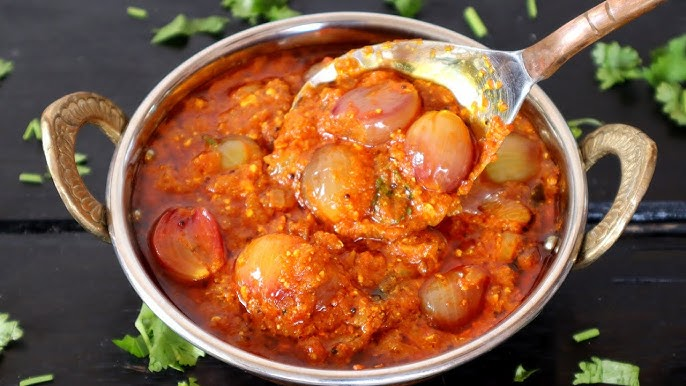
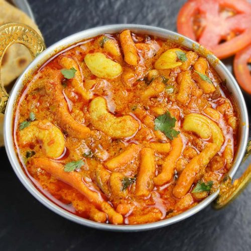

Kaju-lasan
“Kaju Lasan nu Shaak” is a rich and flavorful Gujarati curry made with cashews and garlic, cooked in a spicy, aromatic gravy.

Rajwadi Dhokdi
“Rajwadi Dhokdi” is a traditional Gujarati dish made with gram flour dumplings simmered in a spiced yogurt-based curry for a royal, comforting flavor.

kaju patra nu shaak
“Kaju Patra nu Shaak” is a delicious Gujarati curry made with colocasia leaves (patra) and cashews cooked in a spicy, tangy masala.

suran chana nu shaak
“Suran Chana nu Shaak” is a wholesome Gujarati curry made with yam (suran) and black chickpeas simmered in a spicy, tangy gravy.

Navratna mix veg
“Navratna Mix Veg” is a rich North Indian curry made with nine assorted vegetables, nuts, and fruits cooked in a creamy, mildly spiced gravy.

Dal makhani
“Dal Makhani” is a creamy and buttery Punjabi delicacy made with whole black lentils and kidney beans slow-cooked in a rich, spiced tomato gravy.

Varadiyu
“Varadiyu” is a traditional Gujarati one-pot delicacy made by layering seasonal vegetables, fenugreek dumplings, and spices, slow-cooked for a rustic, earthy flavor.

Panchratna Dal
“Panchratna Dal” is a nutritious Rajasthani dish made by blending five different lentils cooked with aromatic spices for a rich, wholesome flavor.

Aakhi Dunghri nu Shaak
“Aakhi Dunghri nu Shaak” is a traditional Gujarati curry made with whole mushrooms cooked in a flavorful, spiced gravy

kaju gathiya sabji
“Kaju Gathiya Sabji” is a Gujarati dish made with crispy gram flour sticks (gathiya) cooked in a mildly spiced, tangy curry with cashews.

Nagauri Dal
“Nagauri Dal” is a rich and flavorful Rajasthani lentil dish made with a blend of lentils and aromatic spices, typically slow-cooked for a creamy texture.

Madhpudo
“Madhpudo” is a traditional Gujarati sweet made from jaggery and wheat flour, cooked into soft, syrupy balls with a rich, caramel-like flavor.

Tomato kofta
“Tomato Kofta” is a delicious curry featuring soft, spiced tomato-based dumplings (koftas) cooked in a rich, creamy gravy.